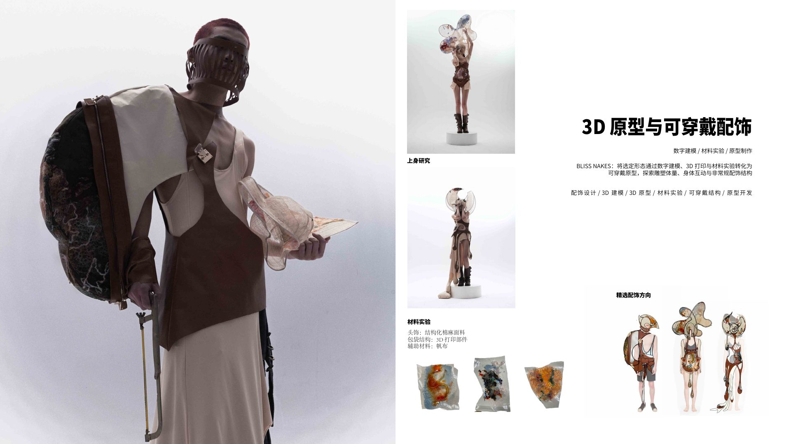
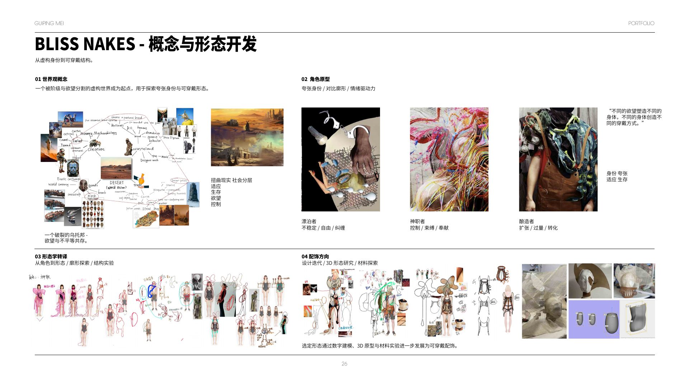
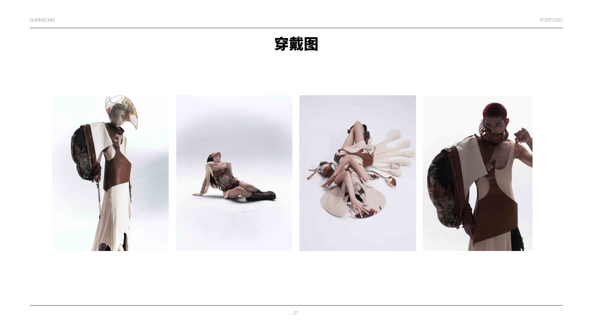

Bliss Naked / 欲望之躯
A fictional world becomes a system for wearing.
从被阶级与欲望分割的虚构世界出发，项目把漂泊者、神职者与酿造者三种身份转译为夸张体量、身体束缚与可携带结构。
Digital modelling and material trials move the project from character narrative to a wearable prototype — part bag, part armour, part portable habitat.
METHODWorld-building
PROCESS3D modelling
OUTPUTWearable prototype
02 / Form translation
Identity shapes volume.
角色研究先转化为廓形，再进入数字建模、3D 打印和材料测试。硬质打印部件与柔软帆布并置，让结构既保护身体，也限制身体。
Role → silhouette → object

Material logicStructured linen · 3D printed components · Canvas
03 / Worn study
The object completes itself on the body.
最终穿戴图不把配饰作为附属物，而把它当成改变身体比例和行动方式的第二层躯体。
Four views / Body interaction
BLISS NAKED turns an imagined social order into a physical relationship between body, volume and restraint.
Next: Acupuncture →